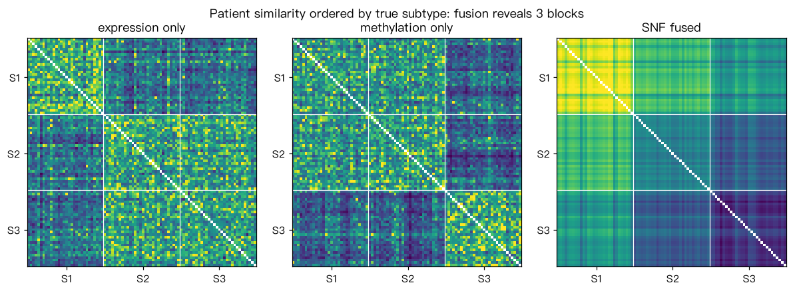

Example13 / 13
相似性网络融合（SNF）整合两类组学数据
模拟 90 名患者分属 3 个亚型；“表达”数据只能区分亚型 1 与 {2,3}，“甲基化”数据只能区分亚型 3 与 {1,2}。 对每类数据建患者相似性矩阵（缩放指数核），再按 Wang 等（2014）的思路迭代： P_v ← S_v · (其他数据类型的 P 的平均) · S_vᵀ，其中 S_v 只保留每个患者的 K 个近邻。 最后对融合矩阵做谱聚类（拉普拉斯特征向量 + k-means），与真实亚型比较调整兰德指数（ARI）。 输出解读：单一数据类型只能分出 2 组，融合后可分出 3 个亚型（ARI 明显更高）。
Output输出图

Output文字输出
只用表达：ARI = 0.47 只用甲基化：ARI = 0.31 SNF 融合：ARI = 0.83
Code代码
# 模拟 90 名患者分属 3 个亚型；“表达”数据只能区分亚型 1 与 {2,3}，“甲基化”数据只能区分亚型 3 与 {1,2}。
# 对每类数据建患者相似性矩阵（缩放指数核），再按 Wang 等（2014）的思路迭代：
# P_v ← S_v · (其他数据类型的 P 的平均) · S_vᵀ，其中 S_v 只保留每个患者的 K 个近邻。
# 最后对融合矩阵做谱聚类（拉普拉斯特征向量 + k-means），与真实亚型比较调整兰德指数（ARI）。
# 输出解读：单一数据类型只能分出 2 组，融合后可分出 3 个亚型（ARI 明显更高）。
import numpy as np
from scipy.cluster.vq import kmeans2
from scipy.spatial.distance import cdist
from scipy.special import comb
rng = np.random.default_rng(4)
labels = np.repeat([0, 1, 2], 30) # 模拟数据，仅用于演示方法
expr = rng.normal(size=(90, 50)); expr[labels == 0, :10] += 1.5
meth = rng.normal(size=(90, 40)); meth[labels == 2, :10] += 1.5
def affinity(X, K=15, mu=0.5):
D = cdist(X, X); Ds = np.sort(D, 1)[:, 1:K + 1].mean(1)
eps = (Ds[:, None] + Ds[None, :] + D) / 3
return np.exp(-D**2 / (mu * eps**2))
def full_kernel(W):
P = W / (2 * (W.sum(1, keepdims=True) - np.diag(W)[:, None])); np.fill_diagonal(P, 0.5); return P
def knn_kernel(W, K=15):
S = np.zeros_like(W)
for i in range(len(W)):
nb = np.argsort(-W[i])[:K]; S[i, nb] = W[i, nb] / W[i, nb].sum()
return S
def snf(Ws, K=15, t=20):
Ps = [full_kernel(W) for W in Ws]; Ss = [knn_kernel(W, K) for W in Ws]
for _ in range(t):
Ps = [Ss[v] @ np.mean([Ps[u] for u in range(len(Ws)) if u != v], 0) @ Ss[v].T for v in range(len(Ws))]
Ps = [(P + P.T) / 2 for P in Ps]
return np.mean(Ps, 0)
def spectral(W, k, seed=0):
d = W.sum(1); L = np.eye(len(W)) - W / np.sqrt(np.outer(d, d))
_, vec = np.linalg.eigh(L); U = vec[:, :k]; U /= np.linalg.norm(U, axis=1, keepdims=True)
return kmeans2(U, k, seed=seed, minit="++")[1]
def ari(a, b):
ct = np.array([[np.sum((a == i) & (b == j)) for j in np.unique(b)] for i in np.unique(a)])
s = comb(ct, 2).sum(); sa = comb(ct.sum(1), 2).sum(); sb = comb(ct.sum(0), 2).sum(); tot = comb(len(a), 2)
exp = sa * sb / tot
return (s - exp) / (0.5 * (sa + sb) - exp)
W_e, W_m = affinity(expr), affinity(meth)
W_f = snf([W_e, W_m])
for name, W in [("只用表达", W_e), ("只用甲基化", W_m), ("SNF 融合", W_f)]:
print(f"{name}：ARI = {ari(labels, spectral(W, 3)):.2f}")
import matplotlib.pyplot as plt
fig, axes = plt.subplots(1, 3, figsize=(11, 3.8))
for ax, W, title in zip(axes, [W_e, W_m, W_f], ["expression only", "methylation only", "SNF fused"]):
M = W.copy(); np.fill_diagonal(M, np.nan) # 患者按真实亚型排序，去掉对角线以便配色
ax.imshow(M, cmap="viridis", vmax=np.nanpercentile(M, 98), interpolation="nearest")
for b in (29.5, 59.5):
ax.axhline(b, color="w", lw=0.8); ax.axvline(b, color="w", lw=0.8)
ax.set_title(title); ax.set_xticks([15, 45, 75]); ax.set_xticklabels(["S1", "S2", "S3"])
ax.set_yticks([15, 45, 75]); ax.set_yticklabels(["S1", "S2", "S3"])
fig.suptitle("Patient similarity ordered by true subtype: fusion reveals 3 blocks")
plt.tight_layout(); plt.show()Run在浏览器中运行
首次加载 Python 环境约需 20–40 秒；可以修改参数后重新运行。